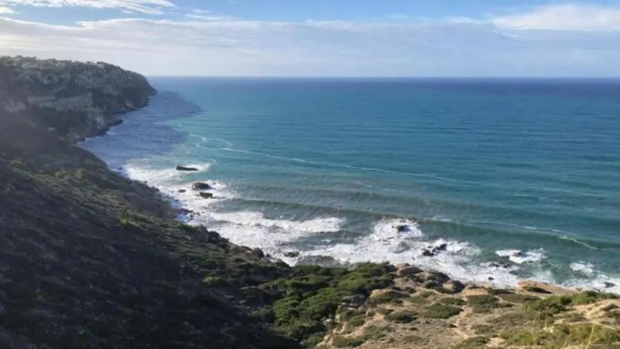
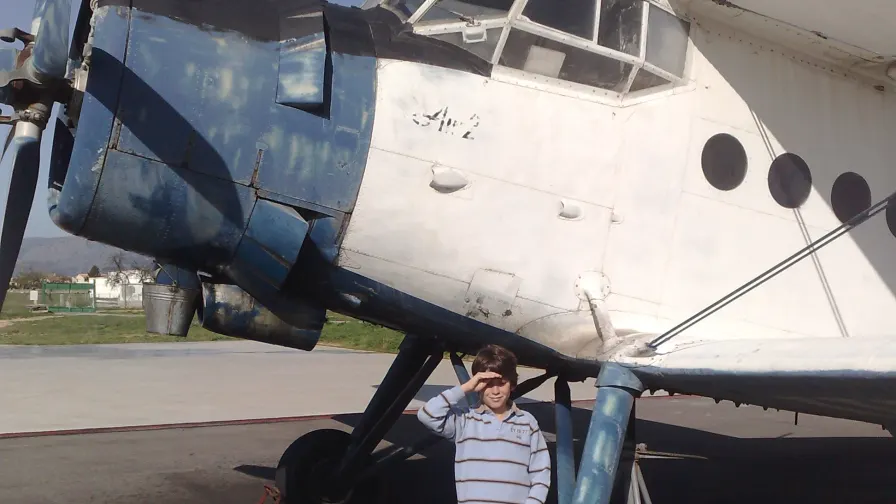
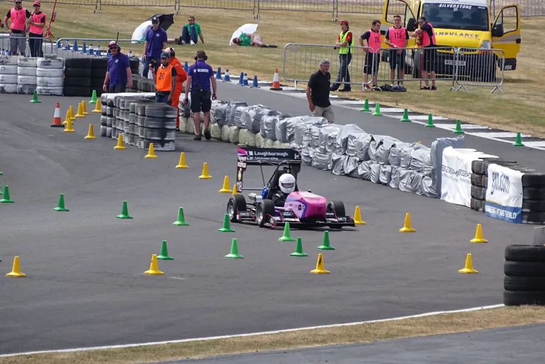
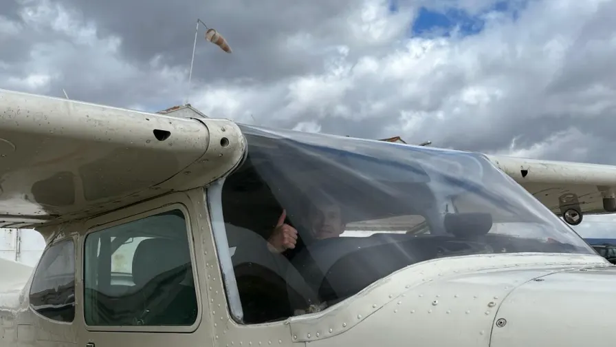
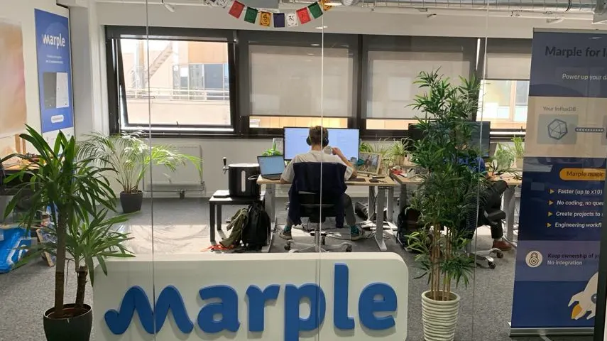
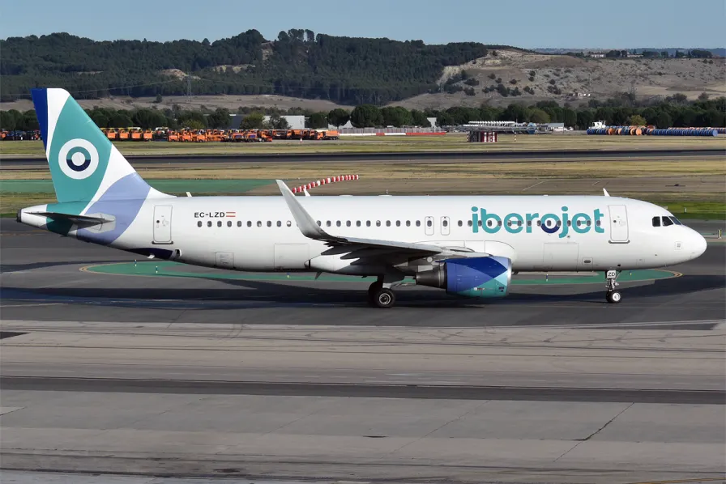

hi, i'm carlos
five lustra and hours.
I was born in Barcelona, grew up in Mallorca, and now spend my time between flying, engineering, friends, and the sea.

Spain
Mallorca feels like home.
I was born in Barcelona, then moved to Mallorca when I was around four. It is still the place I come back to, and it keeps getting better with time.

Spain
Aircraft were always close.
I grew up around aviation through family and friends. Over time, it went from something familiar to something I wanted to do properly.
Spain
Flying the island.
This is an ultralight flight along the Mallorcan coast. Small aircraft are still one of my favourite ways to see the island.

UK
Cars, code, and data.
I moved to the UK for university, got deeper into engineering and software, joined Formula Student, and wrote my final year thesis with the team.
UK
Life in the UK.
The UK was not just work and projects. It was also friends, long walks, pubs, and a good amount of figuring things out.

Spain
The CPL chapter.
After university, I moved back to Spain and worked through my Commercial Pilot License. Covid made it slower, but I got there.
Spain
Swim, bike, run.
A bit outside aviation: we did an Olympic triathlon this summer. It was hard, fun, and definitely something I want to try again.
Spain
Solo cross-country.
Some of the best moments came from solo cross-country flights: planning the route, watching the weather, and bringing the aircraft home myself.

Spain
Engineering tools.
I work at Marple, a Belgian startup building test data software for engineering teams, often around cars, aircraft, and flight test.
Spain
Still flying.
I still fly when I can, and I recently completed my Airbus A320 type rating. I am slowly building the next chapter from there.

Spain
Iberojet training.
I’m a flight student at Iberojet.